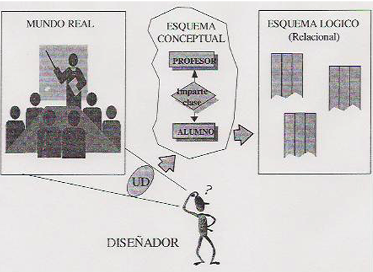
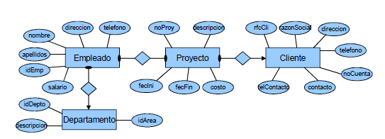
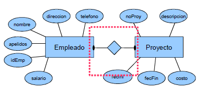
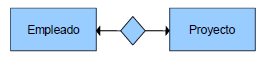
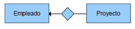
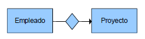
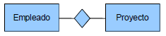
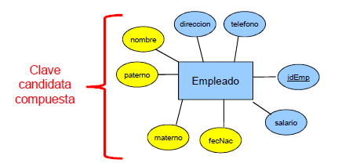
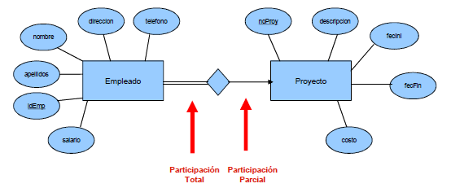
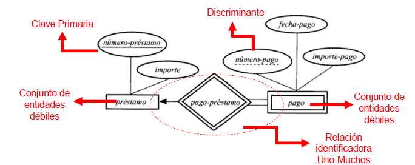

Unida-2
Modelado de base de datos
Modelado de base de datos
- Modelos de bases de datos
- Diccionario de datos
Modelos de bases de datos
Modelado de datos
Los modelos de datos definen cómo se modela la estructura lógica de una base de datos. Los modelos de datos son entidades fundamentales para introducir la abstracción en una base de datos. Los modelos de datos definen cómo los datos se conectan entre sí y cómo se procesan y almacenan dentro del sistema. El primer modelo de datos fue el modelo de datos planos, donde todos los datos utilizados se mantendrían en el mismo plano. Eran propensos a introducir muchas anomalías de duplicación y actualización.
Los primeros modelos de datos no eran tan científicos, por lo tanto,
eran propensos a anomalías de duplicación y actualización.
Un modelo de datos puede ser concreto o abstracto,
y están representados en formato gráfico.
Los tres tipos básicos de modelo de datos son:
- Modelos de datos conceptuales
- Modelos de datos físicos
- Modelos de datos lógicos
Historia del mdelo E/R
Fue ideado por Peter Chen en los años 1976 y 1977 a través de dos artículos. Se trata de un modelo que sirve para crear esquemas conceptuales de bases de datos. De hecho es prácticamente un estándar para crear esta tarea. Se le llama modelo E/R e incluso EI (Entidad / Interrelación). Sus siglas más populares son las E/R porque sirven para el inglés y el español.
Inicialmente (en la propuesta de Chen) sólo se incluían los conceptos de entidad, relación y atributos
Modelo entidad relación
Surge por la necesidad de contar con una herramienta para permitir el entendimiento y
la comprensión entre distintos tipos de usuarios (diseñador, desarrollador y usuarios finales)
con diferentes perspectivas.
Es una herramienta conceptual que no es una técnica y permite que esté libre de ambigüedades.
El modelo Entidad-Relación es uno de losmás utilizados.
Arquitectura ANSI-SPARC
(American National Standards Institute, Standards Planning And Requirements Committee)
Define los niveles de abstracción para un SGBD.
Se trata de una herramienta cuyo objetivo es la representación y definición de todos los datos que se introducen, almacenan, transforman y producen dentro de un sistema de información, sin tener en cuenta las necesidades tecnológiicas de ningun tipo.
El modelo de datos es un medio para comunicar el significado de los datos,
las relaciones entre ellos y las reglas de negocio de un sistema de información.
El modelo entidad relación (E/R) proporciona una herramienta gráfica para representar
información del mundo real a nivel conceptual.
Modelos de Datos
- Modelo Entidad- Relación
- Modelo Relacional
- Modelo Objeto-Relacional
Las ventajas de realizar un modelo de datos son:
- Comprensión de los datos de una organización y del funcionamiento de la organización.
- Obtención de estructuras de datos independientes del entorno físico.
- Control de los posibles errores, detectar las deficiencias lo antes posible.
- Mejora del mantenimiento.
Está basado en una percepción de un mundo real que consiste en una colección de objetos básicos, denominados entidades, y relaciones entre estos objetos.
Componentes del Modelo E/R
Entidad es un objeto que es distinguible entre otros objetos.
- Entidad física o concreta: empleado, persona, compañía, evento, planta
- Entidad lógica o abstracta: proyecto, materia, cuenta, pago
Un conjunto de entidades: son entidades del mismo tipo, que comparten las mismas propiedades.
- Ejemplo: conjunto de empleados, proyectos, compañías, árboles, materias, pagos (Modelo E/R extendido)
Los atributos o propiedades: son características que describen a las entidades.
- Por ejemplo: las personas tienen nombres y direcciones.
Tipos de atributos
- Por su composición
- Simple
- Compuesto
- Por sus valores
- Monovalorados
- Multivalorados
- Por su origen
- Derivados
- Nulos
- Atributos Simples: Son atributos cuyos valores no pueden ser descompuestos en partes más pequeñas sin perder significado.
- Atributos Compuestos: Son aquellos cuyo valor puede ser descompuesto en partes más pequeñas sin perder significado.
- Atributos Univalorados o monovaluados : Son aquellos que tienen un solo valor para cada una de las instancias de la entidad.
- Atributos Multivalorados: Son los atributos que pueden tener muchos valores para cada una de las instancias de la entidad
- Atributos Derivados: Son atributos cuyos valores son calculados con base en los valores de otros atributos. (Calculado numéricamente a través de una fórmula matemática.)
- Atributos Nulos: Son aquellos atributos que pueden no poseer valores para ciertas o todas las instancias de una entidad. Esta ausencia de valores se puede deber a dos razones:
- Que el atributo no aplica para esa instancia de la entidad.
- Que no se conozca el valor del atributo para la instancia de la entidad.
Dominio
Un atributo representa una propiedad de interés de una entidad. Cada atributo de una relación se caracteriza por un nombre y por un dominio. El dominio indica qué valores pueden ser asumidos por una columna de la relación. Un dominio describe un conjunto de posibles valores para cierto atributo. Un dominio puede ser considerado como una restricción es decir restringe valores del atributo.
Relaciones
Una relación es una asociación entre entidades, es decir, acción (verbo)
que se asocia entre dos o más entidades
Ejemplo
| Ana | 102 | entidad EMPLEADO | |
entidad PROYECTO |
El conjunto de relaciones (representado por un rombo), asocia a 2 conjuntos de entidades: EMPLEADO y PROYECTO. Lo que nos indica en el MER que los empleados están asignados a los proyectos.

- La dependencia o asociación entre los conjuntos de entidades es llamada participación.
- En el ejemplo los conjuntos de entidades “EMPLEADO" y “PROYECTO" participan en el conjunto de relaciones EMPLEADO-PROYECTO.
- Se llama grado del conjunto de relaciones a la cantidad de conjuntos de entidades participantes en la relación.
Tipos de Participación
- Participación total.
- EMPLEADO tiene que estar asignado a un PROYECTO
- Participación parcial
- PROYECTO puede tener o no asignado un EMPLEADO
Tipos de relaciones
- Binarias
- Ternarias
- Cuaternarias
Restricciones
El modelo E-R debe incluir reglas que deben mantener los datos.
- Correspondencia de cardinalidades entere entidades
- Claves en atributos
- Restricciones de participación en relaciones
- Correspondencia de cardinalidades
- Expresa el número de entidades las cuales pueden ser asociadas a otro conjunto de entidades através de un conjunto de relaciones.
- Se utilizan más en la descripción de un conjunto de relaciones binarias.
- Correspondencia de cardinalidades
- Para un conjunto de relaciones binarias, el mapeo de cardinalidad es como sigue:
Ejemplos: correspondencia de cardinalidades
- Él empleado está asignado a un sólo proyecto y el proyecto tiene asignado un sólo empleado 
- Él empleado está asignado a varios proyectos y el proyecto tiene asignado un sólo empleado 
Ejemplos: correspondencia de cardinalidades
- Él empleado está asignado a un sólo proyecto y el proyecto tiene asignado muchos empleado 
- Él empleado está asignado muchos proyectos y el proyecto tiene asignado muchos empleado 
Claves en atributos son los atributos que distinguen a las entidades, existen tres tipos de claves:
- Superclaves: es un atributo o un conjunto de atributos que identifican de modo único una entidad dentro de un conjunto de entidades.
- Claves candidatas: es una superclave en la que ninguno de sus subconjuntos es una superclave del conjunto de entidades.
- Clave primaria: es una clave candidata que se elige para identificar una entidad en un conjunto de entidades.
- Superclaves: {idEmp} {idEmp,nombre} {nombre,apellidos} {nombre, direccion} {idEmp, nombre,apellidos} "curp"
- Candidata: {idEmp} {nombre,apellidos} "RFC"
- Primaria: {idEmp} "consecutivo"
Clave compuesta
Restricciones de participación relaciones
- Parcial: Si sólo algunas entidades de E participan en las relaciones de P.
- Total: Si cada entidad de E participa, al menos, en una relación de P.
Un empleado debe estar asignado a un sólo proyecto y un proyecto puede tener asignados varios empleados 
Entidades
Existen dos clases de entidades:
- Regular o Fuerte:
- Débiles
- Fuerte: Las ocurrencias de un tipo de entidad regular tienen existencia propia, es decir no dependiente.
- Débiles: La existencia de cada ocurrencia de una entidad débil depende de la existencia de la ocurrencia de la entidad regular de la que depende.
- No tiene suficientes atributos para formar la clave primaria.
- Depende existencialmente de un conjunto de entidades fuertes o propietarias
- Utilizan cardinalidad de UNO a MUCHOS.
- Debe de tener un discriminante.
Características:
Ejemplo:
Modelo E-R extendido
Es modelado de datos más avanzado debido a que incluye todos los conceptos del modelo Entidad-Relación e incorpora los conceptos de especialización, generalización, conjuntos de de entidades de superclase y subclase, herencia de atributos y agregación.